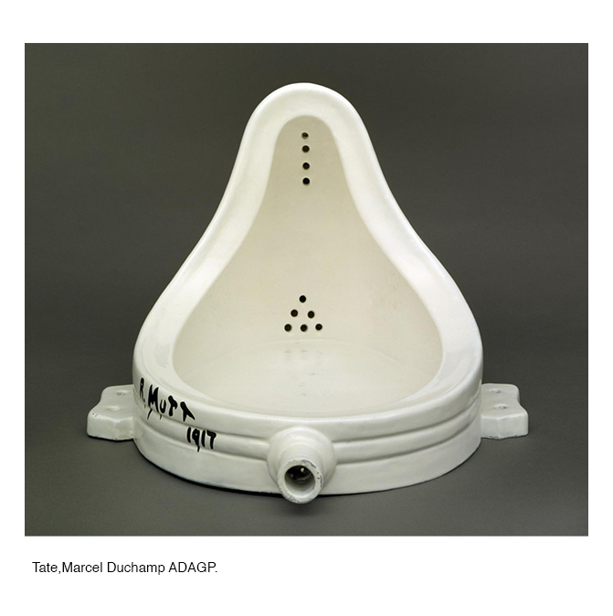
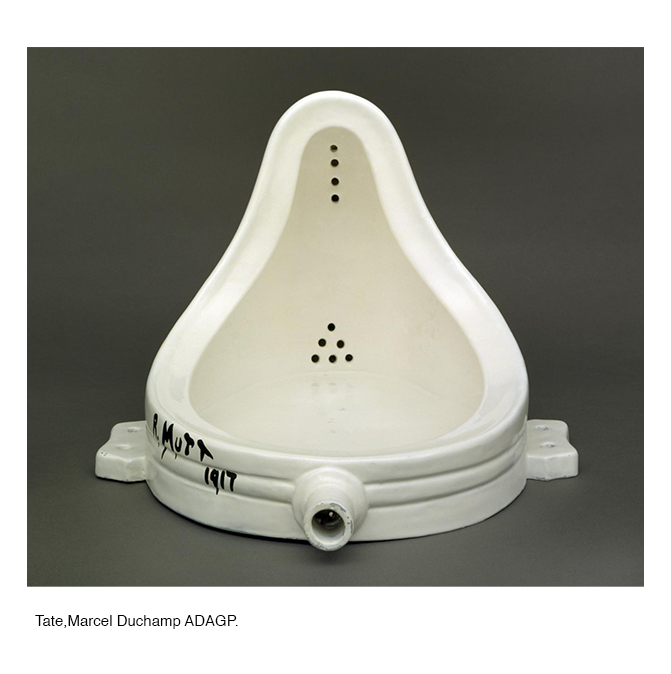
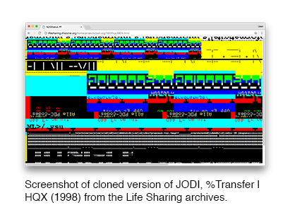
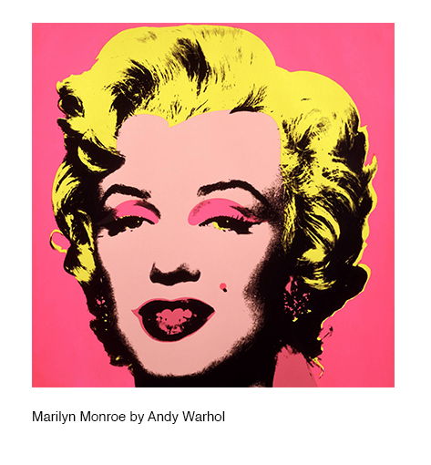
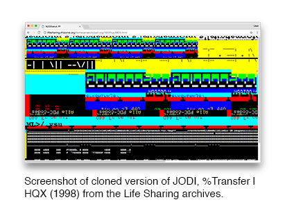
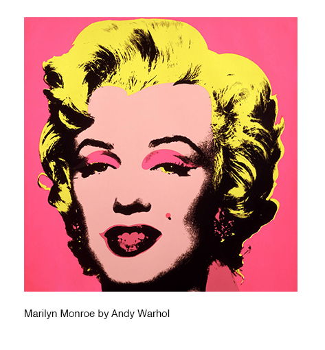

 

PROPÓSITO:
Este projeto irá-se dividir em duas partes sendo uma como um guia que explore o tema da cópia, apropriação, citação, contrafacção, subversão e na segunda parte um léxico no qual podemos explorar os vários significados destas palavras e por último expor vários exemplos de projetos que utilizam esta técnica, bem os artistas e designer que utilizaram a apropriação no seu processo artístico.
OBJETIVOS: Explorar os diferentes significados de apropriação e como o seu significado afeta a forma como esta é usada.
Explorar as técnicas de apropriação existentes na Web e como utilizá-las visa investigar como artistas e designers têm utilizado a apropriação no seu trabalho conscientemente, prestando homenagem, apresentando a nova estética que nasceu nesta nova era de post-internet.
METODOLOGIA:Recolha de textos que explorem a apropriação tanto nas artes como no design ao longo do tempo.
Investigar, compilar e editar referências relacionadas com o tema.
Utilização das técnicas de apropriação, em específico da Web (cópia, colagem, remix, repetição, compilação, apropriação e etc…) no objeto em si de forma a demonstrar como estas técnicas podem ser úteis na configuração de artefactos.
RESULTADO: O resultado previsto seria a criação de um objeto que irá promover uma discussão sobre o que é a apropriação e como tal promover uma reflexão sobre como a apropriação é algo que está intrínseco na criação de artefactos da era pós-internet.
OBJETIVOS:
METODOLOGIA:
RESULTADO: O resultado previsto seria a criação de um objeto que irá promover uma discussão sobre o que é a apropriação e como tal promover uma reflexão sobre como a apropriação é algo que está intrínseco na criação de artefactos da era pós-internet.